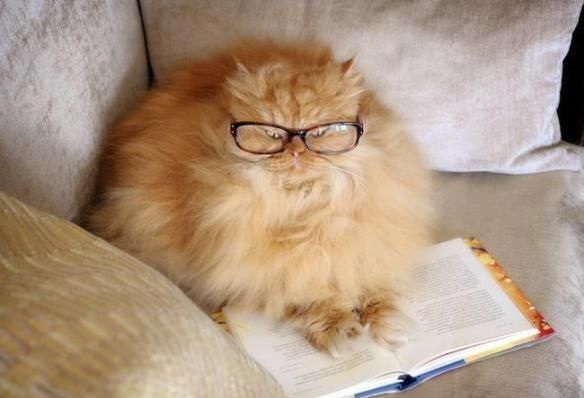

Recomendaciones y tips
Aqui podras ver mucha infomacion relevante para los michiss!


Aqui podras ver mucha infomacion relevante para los michiss!
Los gatos, a diferencia de los perros, son carnívoros estrictos, por lo que requieren una elevada
cantidad de proteínas en su dieta. Estas deben estar presentes al menos en un 25% del total del
alimento, siendo ideal en torno al 40%. Otros nutrientes que debe contener el alimento son los hidratos
de carbono, las grasas, las vitaminas y los minerales.
Si un gato se alimenta de una dieta vegetariana, de baja cantidad de proteína o para otra especie,
podrían aparecer deficiencias y repercutir gravemente en su salud.
La esterilización en los gatos, además de evitar las camadas indeseadas, es muy beneficiosa por diversos motivos relacionados con la salud y el comportamiento: